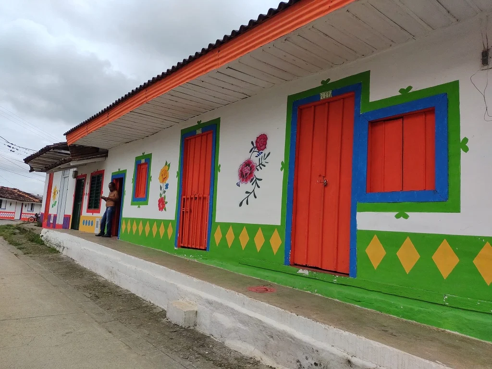
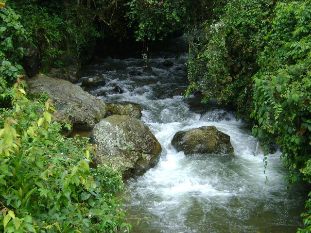

Cerro Azul y Cerro Monteloro
Ideales para caminatas ligeras de tarde. Ofrecen aire puro, vistas panorámicas y recorridos entre cultivos de mora y aguacate.
Caminatas entre cafetales y los cursos de agua que le dan forma al paisaje de Trujillo.
Ideales para caminatas ligeras de tarde. Ofrecen aire puro, vistas panorámicas y recorridos entre cultivos de mora y aguacate.

Un tradicional barrio y calle mirador dentro del casco urbano, desde donde se aprecian las poblaciones y veredas aledañas.

Uno de los ríos que recorren la geografía de Trujillo, con paisajes de gran belleza y recursos hídricos que alimentan los cultivos.

Junto al Culebras, estos ríos recorren la zona cafetera. Cerca de la Hacienda La Carmelita y Makumba se pueden combinar caminatas con avistamiento de aves.